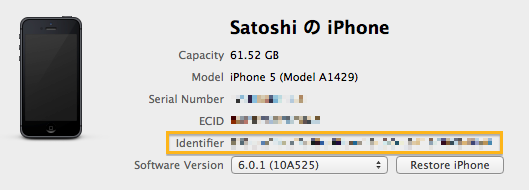

RubyMotion で Nimbus CSS を使ってみる
この記事は RubyMotion Advent Calendar 2012 の17日目の記事です。
Nimbus?
最近 新Google Mapsアプリ採用のフレームワーク NimbusKit がいい感じ で話題になった NimbusKit というフレームワークに興味を持ってちらっと調べてみたのですが、なんと CSS でアプリの View の定義ができるらしいということがわかりました。
しかも、CSS を変更するとリアルタイムにその変更が反映されるそうじゃないですか！
デモ動画はこちらです。
さっそく、RubyMotion からも使えるか、試してみました。
インストール
普通に motion-cocoapods でインストールできます。
Rakefile にこんな感じに書いて、いつも通り$ rakeでOKです。
app.pods do
pod 'Nimbus'
end
コード
Nimbus CSS 関連のコードだけ貼ります。基本的には公式のドキュメントの Nimbus: Nimbus CSS にある "Recommended Procedure for...
RubyMotion の小ワザ
この記事は RubyMotion Advent Calendar 2012 の8日目の記事です。
実際に RubyMotion を使って開発する上で、知っておくとちょっと便利かもしれない小ワザを並べてみます。
複数の iOS 機器をつないでいるときにデプロイする機器を指定する
仕事で iOS アプリの開発をしていると、Mac に複数の機器をつないでいることもしばしばあります。そういうときに rake device する際、idパラメータを指定するとでプロイする機器を選択することができます。
$ rake device id=hogehoge
この際に使うidというのは Identifier のことで Xcode の Organizer で調べることができます。

設定を yaml ファイルにまとめる
複数のアプリの開発をしていると、毎回 Rakefile に testflight の token を書くのは面倒ですし、Rakefile がごちゃっとしますよね。
僕は yaml にそういった設定情報を書くようにしています。
yaml ファイルはこんな感じ。
testflightRuby 2.0.0-preview2 をインストール
普通に rbenv install 2.0.0-preview2 したら openssl を require できなかったので以下の手順を行った。
環境は
- Mac OS X 10.8.2 (10.7.xからのアップグレード)
- brew
- brew でインストールした rbenv, ruby-build を使用
- zsh
$ brew install openssl
$ vim .zshrc
# 以下を追記
export CONFIGURE_OPTS='--with-readline-dir=/usr/local/opt/readline --with-openssl-dir=/usr/local/opt/openssl'
$ rbenv install 2.0.0-preview2
$ rbenv global 2.0.0-preview2
$ ruby -ropen-uri -e 'p open("https://www.google.com/").read'
OpenSSL::SSL::SSLError: SSL_connect returned=1 errno=0 state...